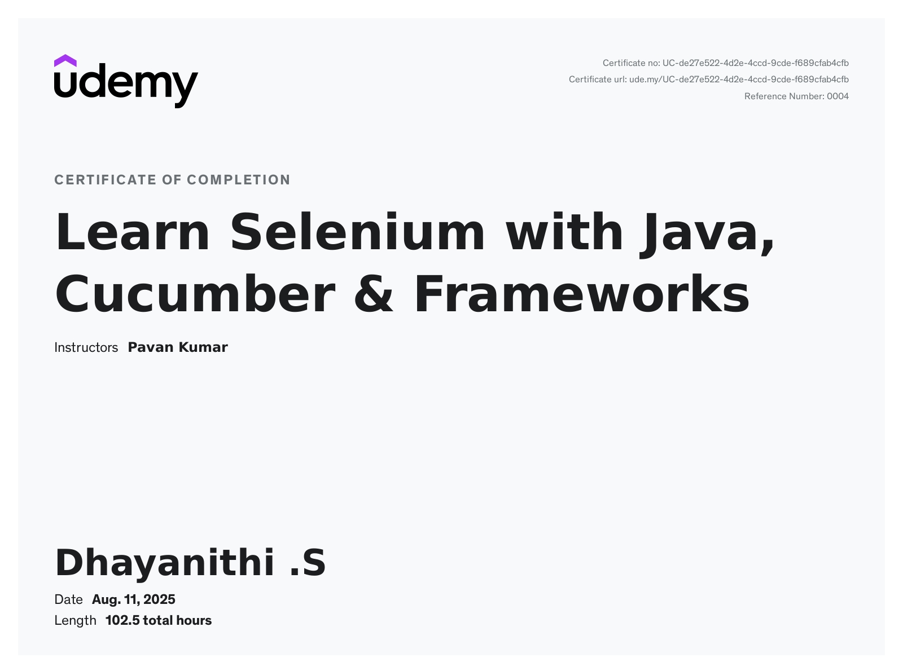
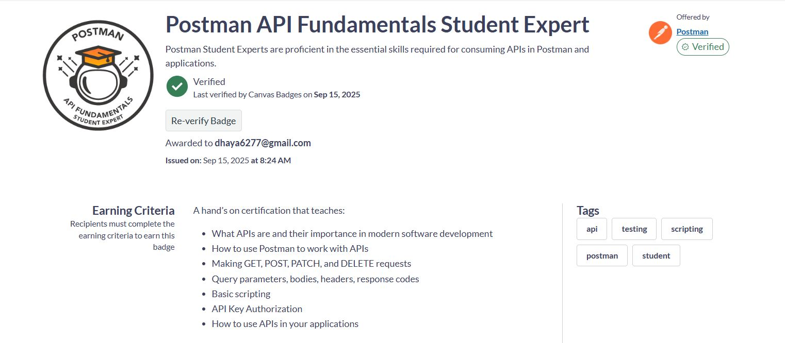
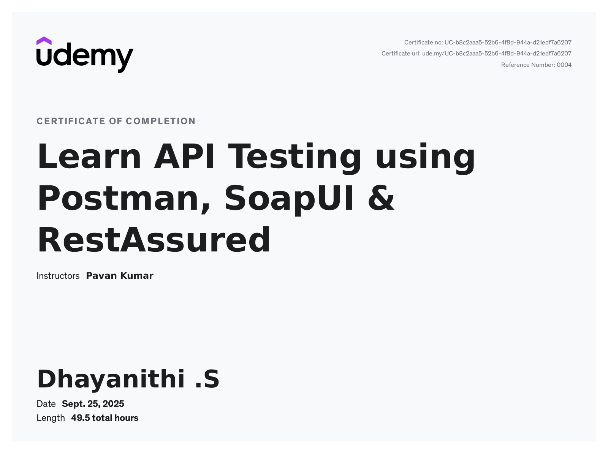

Certifications & Technical Skills

Selenium with Java – Udemy
Completed comprehensive training in UI Automation Testing using Selenium WebDriver & TestNG (2025)
View Certificate

Postman API Fundamentals – Student Expert
Postman / Badgr – Earned Sep 2025 for advanced API automation workflows
View Certificate

API Testing using Postman & REST Assured – Udemy
Hands-on framework building for RESTful API automation and validation (Sep 2025)
View CertificateAutomation Tools
Selenium WebDriver, Postman, REST Assured, SoapUI (basic)
Programming & Scripting
Java, JavaScript (for Postman scripts), SQL (basic)
Frameworks & Libraries
TestNG, Cucumber, Apache POI, Hybrid Framework, Data-Driven Framework
Build & CI/CD Tools
Maven, Jenkins, Docker
Reporting & Logging
Extent Reports, Allure, Log4j2
Testing Concepts
ISTQB-aligned principles, SDLC, STLC, Agile methodologies